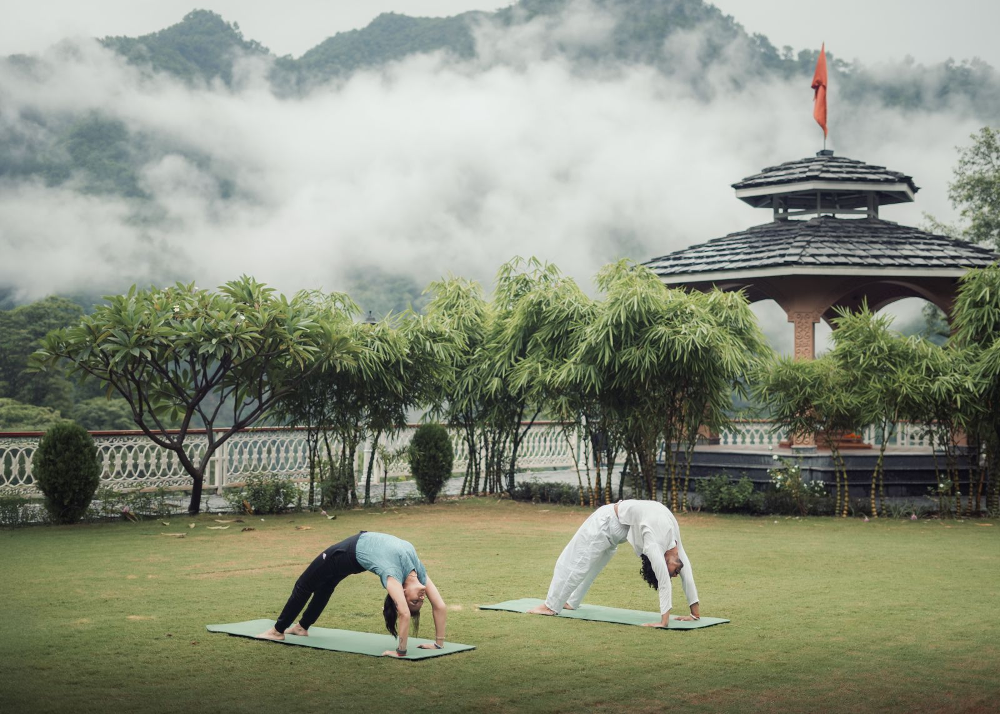
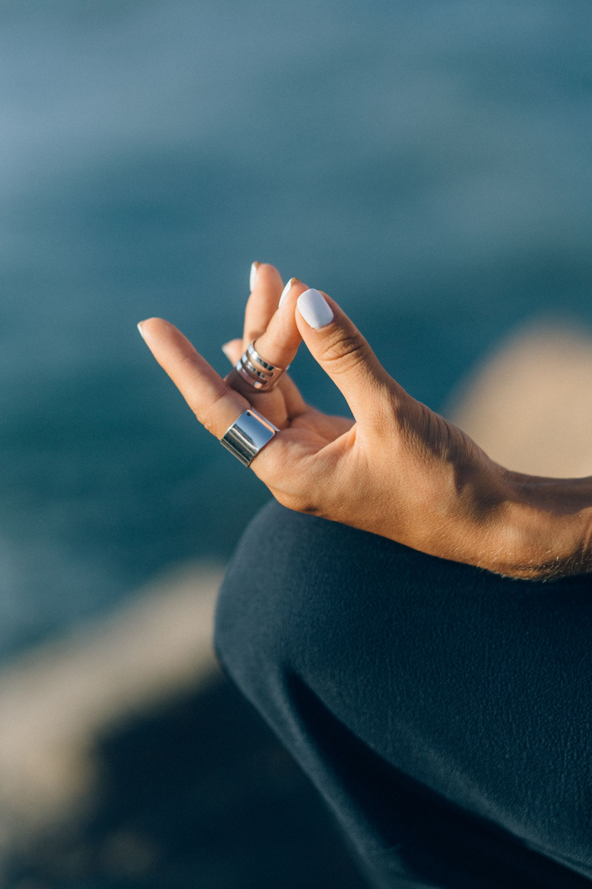
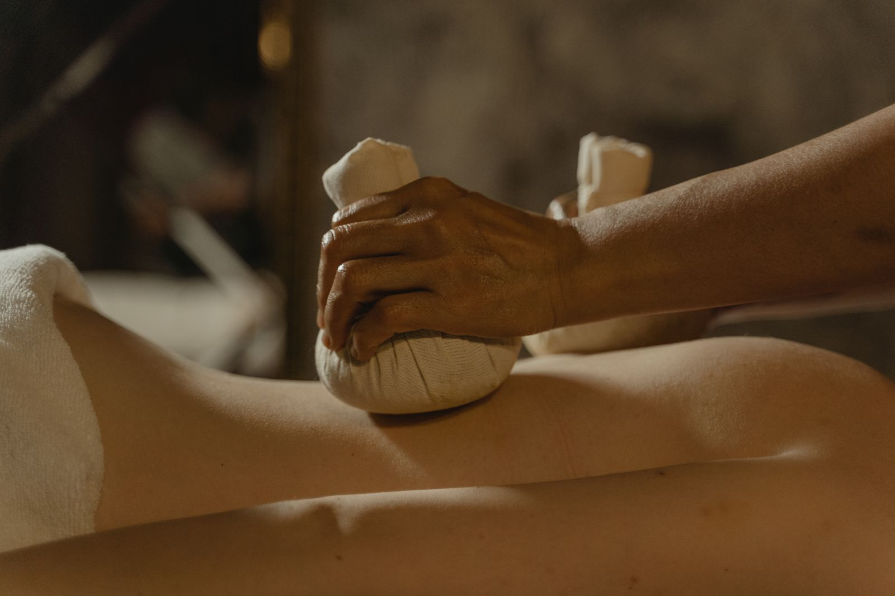

The Four Streams
Practices
Yoga, meditation, healing and naturopathy — four languages for one experience: coming home to yourself. All levels, always.
योग · Stream 01
Yoga
Our line of yoga is classical and unhurried: breath first, then movement, then stillness. Morning hatha builds warmth and alignment; evening yin and restorative practice teach the body to let go. A therapeutic stream supports stiff backs, old knees and brand-new practitioners.
- Sunrise Hatha — all levels, breath-led
- Therapeutic Yoga — small groups, chair & prop supported
- Yin & Restorative — candlelit evenings
- Pranayama & Shatkarma — the cleansing arts

ध्यान · Stream 02
Meditation
We teach meditation the way one teaches swimming — gently, in shallow water first. Guided sittings, breath awareness and yoga nidra for those who “can't sit still”; longer silence and self-inquiry for those ready to go deeper.
- Guided sitting — mornings in the meditation hall
- Yoga Nidra — the sleep of the yogis, afternoons
- Sound baths — bowls and gongs, twice weekly
- Silence hours — a held, optional mauna each day

उपचार · Stream 03
Healing
Some things are stored in the body before they are understood by the mind. Our healing stream is one-to-one and unhurried: marma and energy work, warm-oil bodywork, and listening sessions where the only agenda is yours.
- Marma & energy work — the body's vital points
- Reiki & gentle holding sessions
- Sound healing — one-to-one bowl sessions
- Journaling & listening circles — weekly

प्रकृति · Stream 04
Naturopathy
Naturopathy — nature-cure — holds that the body heals itself when given clean food, clean water, rest and the five great elements. In the Indian tradition these are panchamahabhuta: earth, water, fire, air and ether. Our therapy suite is built on exactly that.
- Earth — mud packs & mud baths, cooling and grounding
- Water — hydrotherapy baths, packs & compresses
- Fire — sun baths, steam & warmth therapies
- Air — breath practice, open-air walking, rest
- Ether — fasting therapy & guided silence
Weekly Rhythm
A sample week in the shala
Day guests may join any marked class; retreat guests follow their personal rhythm alongside it. Illustrative schedule.
Mon · Sunrise Hatha + Guided Meditation
All levels. Breath-led practice, then sitting.
Tue · Therapeutic Yoga + Sound Bath
Small-group therapy practice; evening bowls.
Wed · Pranayama + Fasting / Light-food Day
Cleansing arts morning; kitchen serves kitchari.
Thu · Hatha + Nature-cure Clinic
Practice, then mud & hydro therapy slots.
Fri · Yin Evening + Listening Circle
Candlelit yin; held conversation after.
Sat · Long Practice + Fire Ceremony
Extended morning sadhana; evening havan.
Sun · Silence Morning + Garden Rest
Mauna until lunch; hammocks thereafter.

Try a Session
First time? Come for one sunrise.
Single classes and day passes are open to everyone — no experience, no flexibility, no special clothes required.